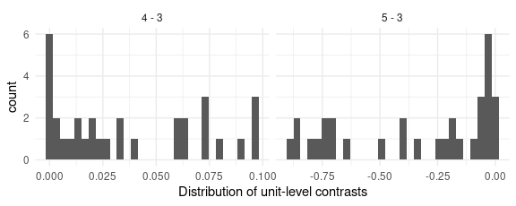
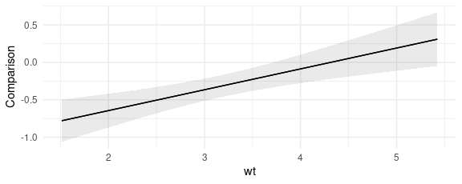
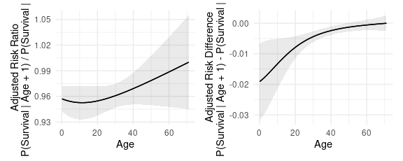
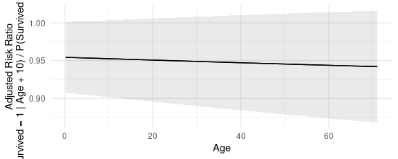
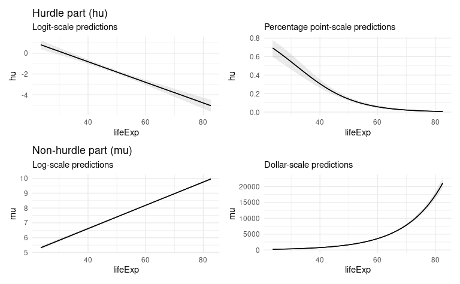
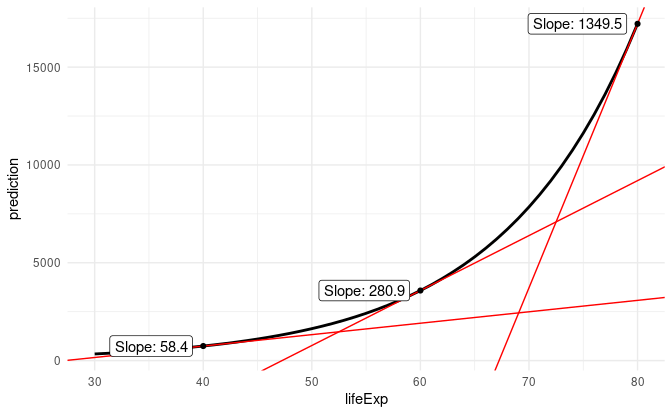
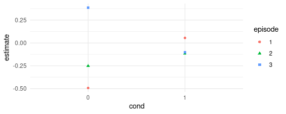
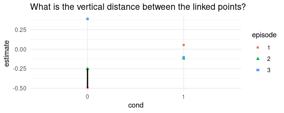
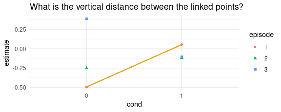
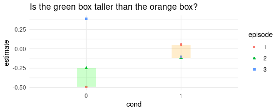

Comparisons
In this vignette, we introduce “comparisons”, defined as:
Compare the predictions made by a model for different regressor values (e.g., college graduates vs. others): contrasts, differences, risk ratios, odds, etc.
The comparisons() function is extremely flexible, and it allows
users to estimate a vast array of quantities of interest. To describe
those quantities, we will break the problem up in 4 steps:
- Quantity
- Grid
- Average
- Hypothesis
These steps can be combined and mixed and matched to define and compute many different estimands.
Simple example: Titanic
Consider a logistic regression model estimated using the Titanic mortality data:
library(marginaleffects)
dat <- "https://vincentarelbundock.github.io/Rdatasets/csv/Stat2Data/Titanic.csv"
dat <- read.csv(dat)
dat$PClass[dat$PClass == "*"] <- NA
mod <- glm(Survived ~ PClass * SexCode * Age, data = dat, family = binomial)
Step 1: Quantity
The question that interests us is:
How does the probability of survival (outcome) change if a passenger travels in 1st class vs. 3rd class?
Since we are comparing two predicted outcomes, we will use
comparisons(). To indicate that our focal variable is PClass and
that we are interested in the comparison between 1st and 3rd class, we
will use the variables argument:
Step 2: Grid
In GLM models, most quantities of interest are conditional, in the sense that they will typically depend on the values of all the predictors in the model. Therefore, we need to decide where in the predictor space we want to evaluate the quantity of interest described above.
By default, comparisons() will compute estimates for every row of the
original dataset that was used to fit a model. There are 1313
observations in the titanic dataset. Therefore, if we just execute the
code in the previous section, we will obtain 1313 estimates of the
difference between the probability of survival in 3rd and 1st class:
comparisons(mod,
variables = list(PClass = c("1st", "3rd"))) # Step 1: Quantity
#>
#> Term Contrast Estimate Std. Error z Pr(>|z|) S 2.5 % 97.5 %
#> PClass 3rd - 1st -0.496 0.0610 -8.13 < 0.001 51.0 -0.616 -0.376
#> PClass 3rd - 1st -0.472 0.1247 -3.79 < 0.001 12.7 -0.716 -0.228
#> PClass 3rd - 1st -0.353 0.0641 -5.51 < 0.001 24.7 -0.478 -0.227
#> PClass 3rd - 1st -0.493 0.0583 -8.45 < 0.001 55.0 -0.607 -0.379
#> PClass 3rd - 1st -0.445 0.1452 -3.07 0.00216 8.9 -0.730 -0.161
#> --- 746 rows omitted. See ?avg_comparisons and ?print.marginaleffects ---
#> PClass 3rd - 1st -0.377 0.0703 -5.36 < 0.001 23.5 -0.515 -0.239
#> PClass 3rd - 1st -0.384 0.0726 -5.30 < 0.001 23.0 -0.527 -0.242
#> PClass 3rd - 1st -0.412 0.0821 -5.02 < 0.001 20.9 -0.573 -0.251
#> PClass 3rd - 1st -0.399 0.0773 -5.16 < 0.001 22.0 -0.550 -0.247
#> PClass 3rd - 1st -0.361 0.0661 -5.47 < 0.001 24.4 -0.490 -0.232
#> Columns: rowid, term, contrast, estimate, std.error, statistic, p.value, s.value, conf.low, conf.high, predicted_lo, predicted_hi, predicted, Survived, PClass, SexCode, Age
#> Type: response
Notice that the contrast between 3rd and 1st is different from row to row. This reflects the fact that, in our model, moving from 1st to 3rd would have a different effect on the predicted probability of survival for different individuals.
We can be more specific in our query. Instead of using the empirical
distribution as our “grid”, we can specify exactly where we want to
evaluate the comparison in the predictor space, by using the newdata
argument and the datagrid() function. For example, say I am interested
in:
The effect of moving from 1st to 3rd class on the probability of survival for a 50 year old man and a 50 year old woman.
I can type:
cmp <- comparisons(mod,
variables = list(PClass = c("1st", "3rd")), # Step 1: Quantity
newdata = datagrid(Age = 50, SexCode = 0:1)) # Step 2: Grid
cmp
#>
#> Term Contrast Age SexCode Estimate Std. Error z Pr(>|z|) S 2.5 % 97.5 % PClass
#> PClass 3rd - 1st 50 0 -0.184 0.0535 -3.45 <0.001 10.8 -0.289 -0.0796 3rd
#> PClass 3rd - 1st 50 1 -0.511 0.1242 -4.12 <0.001 14.7 -0.755 -0.2679 3rd
#>
#> Columns: rowid, term, contrast, estimate, std.error, statistic, p.value, s.value, conf.low, conf.high, Age, SexCode, predicted_lo, predicted_hi, predicted, Survived, PClass
#> Type: response
We now know that moving from 1st to 3rd changes by -0.184 the
probability of survival for 50 year old men (SexCode=0), and by -0.511
the probability of survival for 50 year old women (SexCode=1).
Step 3: Averaging
Again, by default comparisons() estimates quantities for all the
actually observed units in our dataset. Sometimes, it is convenient to
marginalize those conditional estimates, in order to obtain an “average
contrast”:
avg_comparisons(mod, # Step 3: Average
variables = list(PClass = c("1st", "3rd"))) # Step 1: Quantity
#>
#> Term Contrast Estimate Std. Error z Pr(>|z|) S 2.5 % 97.5 %
#> PClass 3rd - 1st -0.396 0.0425 -9.3 <0.001 66.0 -0.479 -0.312
#>
#> Columns: term, contrast, estimate, std.error, statistic, p.value, s.value, conf.low, conf.high
#> Type: response
Alternatively, we could also take the average, but just of the two estimates that we computed above for the 50 year old man and 50 year old woman.
avg_comparisons(mod, # Step 3: Average
variables = list(PClass = c("1st", "3rd")), # Step 1: Quantity
newdata = datagrid(Age = 50, SexCode = 0:1)) # Step 2: Grid
#>
#> Term Contrast Estimate Std. Error z Pr(>|z|) S 2.5 % 97.5 %
#> PClass 3rd - 1st -0.348 0.0676 -5.15 <0.001 21.8 -0.48 -0.215
#>
#> Columns: term, contrast, estimate, std.error, statistic, p.value, s.value, conf.low, conf.high
#> Type: response
Notice that this is exactly the same as the average in the estimates
from the previous section, which we had stored as cmp:
Hypothesis
Finally, imagine we are interested in this question:
Does moving from 1st to 3rd class have a bigger effect on the probability of survival for 50 year old men, or for 50 year old women?
To answer this, we use the hypothesis argument:
comparisons(mod,
variables = list(PClass = c("1st", "3rd")), # Step 1: Quantity
newdata = datagrid(Age = 50, SexCode = 0:1), # Step 2: Grid
hypothesis = "b1 = b2") # Step 4: Hypothesis
#>
#> Term Estimate Std. Error z Pr(>|z|) S 2.5 % 97.5 %
#> b1=b2 0.327 0.135 2.42 0.0156 6.0 0.0618 0.592
#>
#> Columns: term, estimate, std.error, statistic, p.value, s.value, conf.low, conf.high
#> Type: response
This result maps directly onto the estimates we had above. It is the difference in the contrast for 50-men and 50-women:
This result can be interpreted as a “difference-in-differences”: Moving from 1st to 3rd has a much larger negative effect on the probability of survival for a 50 year old woman than for a 50 year old man. This difference is statistically significant.
We can do a similar comparison, but instead of fixing a conditional
grid, we can average over subgroups of the empirical distribution, using
the by argument:
avg_comparisons(mod,
variables = list(PClass = c("1st", "3rd")), # Step 1: Quantity
by = "SexCode", # Step 3: Average
hypothesis = "b1 = b2") # Step 4: Hypothesis
#>
#> Term Estimate Std. Error z Pr(>|z|) S 2.5 % 97.5 %
#> b1=b2 0.162 0.0845 1.91 0.0558 4.2 -0.00402 0.327
#>
#> Columns: term, estimate, std.error, statistic, p.value, s.value, conf.low, conf.high
#> Type: response
Manual computation
Now we show how to use the base R predict() function to compute some
of the same quantities as above. This exercise may be clarifying for
some users.
grid_50_1_3 <- data.frame(Age = 50, SexCode = 1, PClass = "3rd")
grid_50_1_1 <- data.frame(Age = 50, SexCode = 1, PClass = "1st")
grid_50_0_3 <- data.frame(Age = 50, SexCode = 0, PClass = "3rd")
grid_50_0_1 <- data.frame(Age = 50, SexCode = 0, PClass = "1st")
yhat_50_1_3 <- predict(mod, newdata = grid_50_1_3, type = "response")
yhat_50_1_1 <- predict(mod, newdata = grid_50_1_1, type = "response")
yhat_50_0_3 <- predict(mod, newdata = grid_50_0_3, type = "response")
yhat_50_0_1 <- predict(mod, newdata = grid_50_0_1, type = "response")
## prediction on a grid
predictions(mod, newdata = datagrid(Age = 50, SexCode = 1, PClass = "3rd"))
#>
#> Age SexCode PClass Estimate Pr(>|z|) S 2.5 % 97.5 %
#> 50 1 3rd 0.446 0.661 0.6 0.235 0.679
#>
#> Columns: rowid, estimate, p.value, s.value, conf.low, conf.high, Survived, Age, SexCode, PClass
#> Type: invlink(link)
yhat_50_1_3
#> 1
#> 0.4463379
## contrast on a grid
comparisons(mod,
variables = list(PClass = c("1st", "3rd")),
newdata = datagrid(Age = 50, SexCode = 0:1))
#>
#> Term Contrast Age SexCode Estimate Std. Error z Pr(>|z|) S 2.5 % 97.5 % PClass
#> PClass 3rd - 1st 50 0 -0.184 0.0535 -3.45 <0.001 10.8 -0.289 -0.0796 3rd
#> PClass 3rd - 1st 50 1 -0.511 0.1242 -4.12 <0.001 14.7 -0.755 -0.2679 3rd
#>
#> Columns: rowid, term, contrast, estimate, std.error, statistic, p.value, s.value, conf.low, conf.high, Age, SexCode, predicted_lo, predicted_hi, predicted, Survived, PClass
#> Type: response
yhat_50_0_3 - yhat_50_0_1
#> 1
#> -0.1844289
yhat_50_1_3 - yhat_50_1_1
#> 1
#> -0.5113098
## difference-in-differences
comparisons(mod,
variables = list(PClass = c("1st", "3rd")),
newdata = datagrid(Age = 50, SexCode = 0:1),
hypothesis = "b1 = b2")
#>
#> Term Estimate Std. Error z Pr(>|z|) S 2.5 % 97.5 %
#> b1=b2 0.327 0.135 2.42 0.0156 6.0 0.0618 0.592
#>
#> Columns: term, estimate, std.error, statistic, p.value, s.value, conf.low, conf.high
#> Type: response
(yhat_50_0_3 - yhat_50_0_1) - (yhat_50_1_3 - yhat_50_1_1)
#> 1
#> 0.3268809
## average of the empirical distribution of contrasts
avg_comparisons(mod, variables = list(PClass = c("1st", "3rd")), by = "SexCode")
#>
#> Term Contrast SexCode Estimate Std. Error z Pr(>|z|) S 2.5 % 97.5 %
#> PClass mean(3rd) - mean(1st) 0 -0.334 0.0570 -5.86 <0.001 27.7 -0.446 -0.222
#> PClass mean(3rd) - mean(1st) 1 -0.496 0.0623 -7.95 <0.001 49.0 -0.618 -0.374
#>
#> Columns: term, contrast, SexCode, estimate, std.error, statistic, p.value, s.value, conf.low, conf.high, predicted_lo, predicted_hi, predicted
#> Type: response
grid_empirical_1_3 <- dat |> subset(SexCode == 1) |> transform(PClass = "3rd")
grid_empirical_1_1 <- dat |> subset(SexCode == 1) |> transform(PClass = "1st")
grid_empirical_0_3 <- dat |> subset(SexCode == 0) |> transform(PClass = "3rd")
grid_empirical_0_1 <- dat |> subset(SexCode == 0) |> transform(PClass = "1st")
yhat_empirical_0_1 <- predict(mod, newdata = grid_empirical_0_1, type = "response")
yhat_empirical_0_3 <- predict(mod, newdata = grid_empirical_0_3, type = "response")
yhat_empirical_1_1 <- predict(mod, newdata = grid_empirical_1_1, type = "response")
yhat_empirical_1_3 <- predict(mod, newdata = grid_empirical_1_3, type = "response")
mean(yhat_empirical_0_3, na.rm = TRUE) - mean(yhat_empirical_0_1, na.rm = TRUE)
#> [1] -0.3341426
mean(yhat_empirical_1_3, na.rm = TRUE) - mean(yhat_empirical_1_1, na.rm = TRUE)
#> [1] -0.4956673
Predictor types
Logical and factor predictors
Consider a simple model with a logical and a factor variable:
library(marginaleffects)
tmp <- mtcars
tmp$am <- as.logical(tmp$am)
mod <- lm(mpg ~ am + factor(cyl), tmp)
The comparisons function automatically computes contrasts for each
level of the categorical variables, relative to the baseline category
(FALSE for logicals, and the reference level for factors), while
holding all other values at their observed values. The
avg_comparisons() does the same, but then marginalizes by taking the
average of unit-level estimates:
cmp <- avg_comparisons(mod)
cmp
#>
#> Term Contrast Estimate Std. Error z Pr(>|z|) S 2.5 % 97.5 %
#> am TRUE - FALSE 2.56 1.30 1.97 0.0485 4.4 0.0167 5.10
#> cyl 6 - 4 -6.16 1.54 -4.01 <0.001 14.0 -9.1661 -3.15
#> cyl 8 - 4 -10.07 1.45 -6.93 <0.001 37.8 -12.9136 -7.22
#>
#> Columns: term, contrast, estimate, std.error, statistic, p.value, s.value, conf.low, conf.high
#> Type: response
The summary printed above says that moving from the reference category
4 to the level 6 on the cyl factor variable is associated with a
change of -6.156 in the adjusted prediction. Similarly, the contrast
from FALSE to TRUE on the am variable is equal to 2.560.
We can obtain different contrasts by using the comparisons() function.
For example:
avg_comparisons(mod, variables = list(cyl = "sequential"))
#>
#> Term Contrast Estimate Std. Error z Pr(>|z|) S 2.5 % 97.5 %
#> cyl 6 - 4 -6.16 1.54 -4.01 < 0.001 14.0 -9.17 -3.15
#> cyl 8 - 6 -3.91 1.47 -2.66 0.00781 7.0 -6.79 -1.03
#>
#> Columns: term, contrast, estimate, std.error, statistic, p.value, s.value, conf.low, conf.high
#> Type: response
avg_comparisons(mod, variables = list(cyl = "pairwise"))
#>
#> Term Contrast Estimate Std. Error z Pr(>|z|) S 2.5 % 97.5 %
#> cyl 6 - 4 -6.16 1.54 -4.01 < 0.001 14.0 -9.17 -3.15
#> cyl 8 - 4 -10.07 1.45 -6.93 < 0.001 37.8 -12.91 -7.22
#> cyl 8 - 6 -3.91 1.47 -2.66 0.00781 7.0 -6.79 -1.03
#>
#> Columns: term, contrast, estimate, std.error, statistic, p.value, s.value, conf.low, conf.high
#> Type: response
avg_comparisons(mod, variables = list(cyl = "reference"))
#>
#> Term Contrast Estimate Std. Error z Pr(>|z|) S 2.5 % 97.5 %
#> cyl 6 - 4 -6.16 1.54 -4.01 <0.001 14.0 -9.17 -3.15
#> cyl 8 - 4 -10.07 1.45 -6.93 <0.001 37.8 -12.91 -7.22
#>
#> Columns: term, contrast, estimate, std.error, statistic, p.value, s.value, conf.low, conf.high
#> Type: response
For comparison, this code produces the same results using the emmeans
package:
library(emmeans)
emm <- emmeans(mod, specs = "cyl")
contrast(emm, method = "revpairwise")
#> contrast estimate SE df t.ratio p.value
#> cyl6 - cyl4 -6.16 1.54 28 -4.009 0.0012
#> cyl8 - cyl4 -10.07 1.45 28 -6.933 <.0001
#> cyl8 - cyl6 -3.91 1.47 28 -2.660 0.0331
#>
#> Results are averaged over the levels of: am
#> P value adjustment: tukey method for comparing a family of 3 estimates
emm <- emmeans(mod, specs = "am")
contrast(emm, method = "revpairwise")
#> contrast estimate SE df t.ratio p.value
#> TRUE - FALSE 2.56 1.3 28 1.973 0.0585
#>
#> Results are averaged over the levels of: cyl
Note that these commands also work on for other types of models, such as GLMs, on different scales:
mod_logit <- glm(am ~ factor(gear), data = mtcars, family = binomial)
avg_comparisons(mod_logit)
#>
#> Term Contrast Estimate Std. Error z Pr(>|z|) S 2.5 % 97.5 %
#> gear 4 - 3 0.667 1.36e-01 4.9e+00 <0.001 20.0 0.4 0.933
#> gear 5 - 3 1.000 9.95e-06 1.0e+05 <0.001 Inf 1.0 1.000
#>
#> Columns: term, contrast, estimate, std.error, statistic, p.value, s.value, conf.low, conf.high
#> Type: response
avg_comparisons(mod_logit, type = "link")
#>
#> Term Contrast Estimate Std. Error z Pr(>|z|) S 2.5 % 97.5 %
#> gear 4 - 3 21.3 4578 0.00464 0.996 0.0 -8951 8994
#> gear 5 - 3 41.1 9156 0.00449 0.996 0.0 -17904 17986
#>
#> Columns: term, contrast, estimate, std.error, statistic, p.value, s.value, conf.low, conf.high
#> Type: link
Observation-Wise Categorical Marginal Effect
For categorical predictors, Scholbeck et al. 2023 recommend that analysts report what they call the “observation-wise categorical marginal effects.” They describe the procedure as follows:
Recall that the common definition of categorical MEs is based on first changing all observations’ value of xj to each category and then computing the difference in predictions when changing it to the reference category. However, one is often interested in prediction changes if aspects of an actual observation change. We therefore propose an observation-wise categorical ME. We first select a single reference category ch. For each observation whose feature value xj ≠ ch, we predict once with the observed value xj and once where xj has been replaced by ch.
To achieve this with marginaleffects, we proceed in three simple
steps:
- Use the
factor()function to set the reference level of the categorical variable. - Use the
newdataargument to take the subset of data where the observed xj is different from the reference level we picked in 1. - Apply the
avg_comparisons()with the"revreference"option.
dat <- transform(mtcars, cyl = factor(cyl, levels = c(6, 4, 8)))
mod <- glm(vs ~ mpg * factor(cyl), data = dat, family = binomial)
avg_comparisons(mod,
variables = list(cyl = "revreference"),
newdata = subset(dat, cyl != 6))
#>
#> Term Contrast Estimate Std. Error z Pr(>|z|) S 2.5 % 97.5 %
#> cyl 6 - 4 -0.323 0.2170 -1.49 0.137 2.9 -0.748 0.103
#> cyl 6 - 8 0.561 0.0357 15.69 <0.001 181.9 0.491 0.631
#>
#> Columns: term, contrast, estimate, std.error, statistic, p.value, s.value, conf.low, conf.high
#> Type: response
Character predictors
All functions of the marginaleffects package attempt to treat
character predictors as factor predictors. However, using factors
instead of characters when modeling is strongly encouraged, because
they are much safer and faster. This is because factors hold useful
information about the full list of levels, which makes them easier to
track and handle internally by marginaleffects. Users are strongly
encouraged to convert their character variables to factor before fitting
their models and using slopes functions.
Numeric predictors
We can also compute contrasts for differences in numeric variables. For
example, we can see what happens to the adjusted predictions when we
increment the hp variable by 1 unit (default) or by 5 units about the
original value:
mod <- lm(mpg ~ hp, data = mtcars)
avg_comparisons(mod)
#>
#> Term Contrast Estimate Std. Error z Pr(>|z|) S 2.5 % 97.5 %
#> hp +1 -0.0682 0.0101 -6.74 <0.001 35.9 -0.0881 -0.0484
#>
#> Columns: term, contrast, estimate, std.error, statistic, p.value, s.value, conf.low, conf.high
#> Type: response
avg_comparisons(mod, variables = list(hp = 5))
#>
#> Term Contrast Estimate Std. Error z Pr(>|z|) S 2.5 % 97.5 %
#> hp +5 -0.341 0.0506 -6.74 <0.001 35.9 -0.44 -0.242
#>
#> Columns: term, contrast, estimate, std.error, statistic, p.value, s.value, conf.low, conf.high
#> Type: response
Compare adjusted predictions for a change in the regressor between two arbitrary values:
avg_comparisons(mod, variables = list(hp = c(90, 110)))
#>
#> Term Contrast Estimate Std. Error z Pr(>|z|) S 2.5 % 97.5 %
#> hp 110 - 90 -1.36 0.202 -6.74 <0.001 35.9 -1.76 -0.968
#>
#> Columns: term, contrast, estimate, std.error, statistic, p.value, s.value, conf.low, conf.high
#> Type: response
Compare adjusted predictions when the regressor changes across the interquartile range, across one or two standard deviations about its mean, or from across its full range:
avg_comparisons(mod, variables = list(hp = "iqr"))
#>
#> Term Contrast Estimate Std. Error z Pr(>|z|) S 2.5 % 97.5 %
#> hp Q3 - Q1 -5.7 0.845 -6.74 <0.001 35.9 -7.35 -4.04
#>
#> Columns: term, contrast, estimate, std.error, statistic, p.value, s.value, conf.low, conf.high
#> Type: response
avg_comparisons(mod, variables = list(hp = "sd"))
#>
#> Term Contrast Estimate Std. Error z Pr(>|z|) S 2.5 % 97.5 %
#> hp (x + sd/2) - (x - sd/2) -4.68 0.694 -6.74 <0.001 35.9 -6.04 -3.32
#>
#> Columns: term, contrast, estimate, std.error, statistic, p.value, s.value, conf.low, conf.high
#> Type: response
avg_comparisons(mod, variables = list(hp = "2sd"))
#>
#> Term Contrast Estimate Std. Error z Pr(>|z|) S 2.5 % 97.5 %
#> hp (x + sd) - (x - sd) -9.36 1.39 -6.74 <0.001 35.9 -12.1 -6.64
#>
#> Columns: term, contrast, estimate, std.error, statistic, p.value, s.value, conf.low, conf.high
#> Type: response
avg_comparisons(mod, variables = list(hp = "minmax"))
#>
#> Term Contrast Estimate Std. Error z Pr(>|z|) S 2.5 % 97.5 %
#> hp Max - Min -19.3 2.86 -6.74 <0.001 35.9 -24.9 -13.7
#>
#> Columns: term, contrast, estimate, std.error, statistic, p.value, s.value, conf.low, conf.high
#> Type: response
Interactions and Cross-Contrasts
In some contexts we are interested in whether the “effect” of a variable changes, as a function of another variable. A very simple strategy to tackle this question is to estimate a model with a multiplicative interaction like this one:
Calling avg_comparisons() with the by argument shows that the
estimated comparisons differ based on cyl:
avg_comparisons(mod, variables = "am", by = "cyl")
#>
#> Term Contrast cyl Estimate Std. Error z Pr(>|z|) S 2.5 % 97.5 %
#> am mean(1) - mean(0) 4 5.18 2.05 2.521 0.0117 6.4 1.15 9.20
#> am mean(1) - mean(0) 6 1.44 2.32 0.623 0.5336 0.9 -3.10 5.98
#> am mean(1) - mean(0) 8 0.35 2.32 0.151 0.8799 0.2 -4.19 4.89
#>
#> Columns: term, contrast, cyl, estimate, std.error, statistic, p.value, s.value, conf.low, conf.high, predicted_lo, predicted_hi, predicted
#> Type: response
However, using the hypothesis argument for pairwise contrasts between
the above comparisons reveals that the heterogeneity is not
statistically significant:
avg_comparisons(mod, variables = "am", by = "cyl", hypothesis = "pairwise")
#>
#> Term Estimate Std. Error z Pr(>|z|) S 2.5 % 97.5 %
#> 4 - 6 3.73 3.09 1.206 0.228 2.1 -2.33 9.80
#> 4 - 8 4.82 3.09 1.559 0.119 3.1 -1.24 10.89
#> 6 - 8 1.09 3.28 0.333 0.739 0.4 -5.33 7.51
#>
#> Columns: term, estimate, std.error, statistic, p.value, s.value, conf.low, conf.high
#> Type: response
In other contexts, we are interested in a “cross-contrast” or
“cross-comparisons”; we would like to know what happens when two (or
more) predictors change at the same time. To assess this, we can specify
the regressors of interest in the variables argument, and set the
cross=TRUE:
avg_comparisons(mod, variables = c("cyl", "am"), cross = TRUE)
#>
#> Estimate Std. Error z Pr(>|z|) S 2.5 % 97.5 % C: am C: cyl
#> -2.33 2.48 -0.942 0.34596 1.5 -7.19 2.52 1 - 0 6 - 4
#> -7.50 2.77 -2.709 0.00674 7.2 -12.93 -2.07 1 - 0 8 - 4
#>
#> Columns: term, contrast_am, contrast_cyl, estimate, std.error, statistic, p.value, s.value, conf.low, conf.high
#> Type: response
Quantities of interest
This section compares 4 quantities:
- Unit-Level Contrasts
- Average Contrast
- Contrast at the Mean
- Contrast Between Marginal Means
The ideas discussed in this section focus on contrasts, but they carry over directly to analogous types of marginal effects.
Unit-level contrasts
In models with interactions or non-linear components (e.g., link function), the value of a contrast or marginal effect can depend on the value of all the predictors in the model. As a result, contrasts and marginal effects are fundamentally unit-level quantities. The effect of a 1 unit increase in X can be different for Mary or John. Every row of a dataset has a different contrast and marginal effect.
The mtcars dataset has 32 rows, so the comparisons() function
produces 32 contrast estimates:
library(marginaleffects)
mod <- glm(vs ~ factor(gear) + mpg, family = binomial, data = mtcars)
cmp <- comparisons(mod, variables = "mpg")
nrow(cmp)
#> [1] 32
Average contrasts
By default, the slopes() and comparisons() functions compute
marginal effects and contrasts for every row of the original dataset.
These unit-level estimates can be of great interest, as discussed in
another vignette. Nevertheless, one may want to focus on
one-number summaries: the avg_*() functions or the by argument
compute the “Average Marginal Effect” or “Average Contrast,” by taking
the mean of all the unit-level estimates.
avg_comparisons(mod, variables = "mpg")
#>
#> Term Contrast Estimate Std. Error z Pr(>|z|) S 2.5 % 97.5 %
#> mpg +1 0.0609 0.0128 4.78 <0.001 19.1 0.0359 0.0859
#>
#> Columns: term, contrast, estimate, std.error, statistic, p.value, s.value, conf.low, conf.high
#> Type: response
comparisons(mod, variables = "mpg", by = TRUE)
#>
#> Term Contrast Estimate Std. Error z Pr(>|z|) S 2.5 % 97.5 %
#> mpg +1 0.0609 0.0128 4.78 <0.001 19.1 0.0359 0.0859
#>
#> Columns: term, contrast, estimate, std.error, statistic, p.value, s.value, conf.low, conf.high
#> Type: response
which are equivalent to:
We could also show the full distribution of contrasts across our dataset with a histogram:
library(ggplot2)
cmp <- comparisons(mod, variables = "gear")
ggplot(cmp, aes(estimate)) +
geom_histogram(bins = 30) +
facet_wrap(~contrast, scale = "free_x") +
labs(x = "Distribution of unit-level contrasts")

This graph displays the effect of a change of 1 unit in the gear
variable, for each individual in the observed data.
Contrasts at the mean
An alternative which used to be very common but has now fallen into a bit of disfavor is to compute “Contrasts at the mean.” The idea is to create a “synthetic” or “hypothetical” individual (row of the dataset) whose characteristics are completely average. Then, we compute and report the contrast for this specific hypothetical individual.
This can be achieved by setting newdata="mean" or to
newdata=datagrid(), both of which fix variables to their means or
modes:
comparisons(mod, variables = "mpg", newdata = "mean")
#>
#> Term Contrast Estimate Std. Error z Pr(>|z|) S 2.5 % 97.5 % gear mpg
#> mpg +1 0.155 0.0539 2.88 0.00399 8.0 0.0495 0.261 3 20.1
#>
#> Columns: rowid, term, contrast, estimate, std.error, statistic, p.value, s.value, conf.low, conf.high, predicted_lo, predicted_hi, predicted, vs, gear, mpg
#> Type: response
Contrasts at the mean can differ substantially from average contrasts.
The advantage of this approach is that it is very cheap and fast computationally. The disadvantage is that the interpretation is somewhat ambiguous. Often times, there simply does not exist an individual who is perfectly average across all dimensions of the dataset. It is also not clear why the analyst should be particularly interested in the contrast for this one, synthetic, perfectly average individual.
Contrasts between marginal means
Yet another type of contrast is the “Contrast between marginal means.”
This type of contrast is closely related to the “Contrast at the mean”,
with a few wrinkles. It is the default approach used by the emmeans
package for R.
Roughly speaking, the procedure is as follows:
- Create a prediction grid with one cell for each combination of categorical predictors in the model, and all numeric variables held at their means.
- Make adjusted predictions in each cell of the prediction grid.
- Take the average of those predictions (marginal means) for each
combination of
btype(focal variable) andresp(groupbyvariable). - Compute pairwise differences (contrasts) in marginal means across
different levels of the focal variable
btype.
The contrast obtained through this approach has two critical characteristics:
- It is the contrast for a synthetic individual with perfectly average qualities on every (numeric) predictor.
- It is a weighted average of unit-level contrasts, where weights assume a perfectly balanced dataset across every categorical predictor.
With respect to (a), the analyst should ask themselves: Is my quantity of interest the contrast for a perfectly average hypothetical individual? With respect to (b), the analyst should ask themselves: Is my quantity of interest the contrast in a model estimated using (potentially) unbalanced data, but interpreted as if the data were perfectly balanced?
For example, imagine that one of the control variables in your model is a variable measuring educational attainment in 4 categories: No high school, High school, Some college, Completed college. The contrast between marginal is a weighted average of contrasts estimated in the 4 cells, and each of those contrasts will be weighted equally in the overall estimate. If the population of interest is highly unbalanced in the educational categories, then the estimate computed in this way will not be most useful.
If the contrasts between marginal means is really the quantity of
interest, it is easy to use the comparisons() to estimate contrasts
between marginal means. The newdata determines the values of the
predictors at which we want to compute contrasts. We can set
newdata="marginalmeans" to emulate the emmeans behavior. For
example, here we compute contrasts in a model with an interaction:
dat <- read.csv("https://vincentarelbundock.github.io/Rdatasets/csv/palmerpenguins/penguins.csv")
mod <- lm(bill_length_mm ~ species * sex + island + body_mass_g, data = dat)
avg_comparisons(
mod,
newdata = "marginalmeans",
variables = c("species", "island"))
#>
#> Term Contrast Estimate Std. Error z Pr(>|z|) S 2.5 % 97.5 %
#> island Dream - Biscoe -0.434 0.451 -0.962 0.336 1.6 -1.318 0.450
#> island Torgersen - Biscoe 0.060 0.467 0.128 0.898 0.2 -0.856 0.976
#> species Chinstrap - Adelie 10.563 0.418 25.272 <0.001 465.7 9.744 11.382
#> species Gentoo - Adelie 5.792 0.798 7.257 <0.001 41.2 4.228 7.356
#>
#> Columns: term, contrast, estimate, std.error, statistic, p.value, s.value, conf.low, conf.high
#> Type: response
Which is equivalent to this in emmeans:
emm <- emmeans(
mod,
specs = c("species", "island"))
contrast(emm, method = "trt.vs.ctrl1")
#> contrast estimate SE df t.ratio p.value
#> Chinstrap Biscoe - Adelie Biscoe nonEst NA NA NA NA
#> Gentoo Biscoe - Adelie Biscoe 5.792 0.798 331 7.257 <.0001
#> Adelie Dream - Adelie Biscoe -0.434 0.451 331 -0.962 0.8476
#> Chinstrap Dream - Adelie Biscoe nonEst NA NA NA NA
#> Gentoo Dream - Adelie Biscoe 5.358 1.035 331 5.177 <.0001
#> Adelie Torgersen - Adelie Biscoe 0.060 0.467 331 0.128 0.9998
#> Chinstrap Torgersen - Adelie Biscoe nonEst NA NA NA NA
#> Gentoo Torgersen - Adelie Biscoe 5.852 1.070 331 5.468 <.0001
#>
#> Results are averaged over the levels of: sex
#> P value adjustment: dunnettx method for 8 tests
The emmeans section of the Alternative Software
vignette shows further examples.
The excellent vignette of the emmeans
package
discuss the same issues in a slightly different (and more positive) way:
The point is that the marginal means of cell.means give equal weight to each cell. In many situations (especially with experimental data), that is a much fairer way to compute marginal means, in that they are not biased by imbalances in the data. We are, in a sense, estimating what the marginal means would be, had the experiment been balanced. Estimated marginal means (EMMs) serve that need.
All this said, there are certainly situations where equal weighting is not appropriate. Suppose, for example, we have data on sales of a product given different packaging and features. The data could be unbalanced because customers are more attracted to some combinations than others. If our goal is to understand scientifically what packaging and features are inherently more profitable, then equally weighted EMMs may be appropriate; but if our goal is to predict or maximize profit, the ordinary marginal means provide better estimates of what we can expect in the marketplace.
Conditional contrasts
Consider a model with an interaction term. What happens to the dependent
variable when the hp variable increases by 10 units?
library(marginaleffects)
mod <- lm(mpg ~ hp * wt, data = mtcars)
plot_comparisons(
mod,
variables = list(hp = 10),
condition = "wt")

Transformations
So far we have focused on simple differences between adjusted predictions. Now, we show how to use ratios, back transformations, and arbitrary functions to estimate a slew of quantities of interest. Powerful transformations and custom contrasts are made possible by using three arguments which act at different stages of the computation process:
comparisontransform
Consider the case of a model with a single predictor x. To compute average contrasts, we proceed as follows:
- Compute adjusted predictions for each row of the dataset for the observed values x: ŷx
- Compute adjusted predictions for each row of the dataset for the observed values x + 1: ŷx + 1
comparison: Compute unit-level contrasts by taking the difference between (or some other function of) adjusted predictions: ŷx + 1 − ŷx- Compute the average contrast by taking the mean of unit-level contrasts: $1/N \sum_{i=1}^N \hat{y}_{x+1} - \hat{y}_x$
transform: Transform the average contrast or return them as-is.
The comparison argument of the comparisons() function determines how
adjusted predictions are combined to create a contrast. By default, we
take a simple difference between predictions with hi value of x, and
predictions with a lo value of x: function(hi, lo) hi-lo.
The transform argument of the comparisons() function applies a
custom transformation to the unit-level contrasts.
The transform argument applies a custom transformation to the final
quantity, as would be returned if we evaluated the same call without
transform.
Differences
The default contrast calculate by the comparisons() function is a
(untransformed) difference between two adjusted predictions. For
instance, to estimate the effect of a change of 1 unit, we do:
library(marginaleffects)
mod <- glm(vs ~ mpg, data = mtcars, family = binomial)
## construct data
mtcars_minus <- mtcars_plus <- mtcars
mtcars_minus$mpg <- mtcars_minus$mpg - 0.5
mtcars_plus$mpg <- mtcars_plus$mpg + 0.5
## adjusted predictions
yhat_minus <- predict(mod, newdata = mtcars_minus, type = "response")
yhat_plus <- predict(mod, newdata = mtcars_plus, type = "response")
## unit-level contrasts
con <- yhat_plus - yhat_minus
## average contrasts
mean(con)
#> [1] 0.05540227
We can use the avg_comparisons() function , or the by argument to
obtain the same results:
avg_comparisons(mod)
#>
#> Term Contrast Estimate Std. Error z Pr(>|z|) S 2.5 % 97.5 %
#> mpg +1 0.0568 0.00835 6.81 <0.001 36.5 0.0404 0.0732
#>
#> Columns: term, contrast, estimate, std.error, statistic, p.value, s.value, conf.low, conf.high
#> Type: response
comparisons(mod, by = TRUE)
#>
#> Term Contrast Estimate Std. Error z Pr(>|z|) S 2.5 % 97.5 %
#> mpg +1 0.0568 0.00835 6.81 <0.001 36.5 0.0404 0.0732
#>
#> Columns: term, contrast, estimate, std.error, statistic, p.value, s.value, conf.low, conf.high
#> Type: response
Difference-in-Differences(-in-Differences)
Going back to our Titanic example:
dat <- "https://vincentarelbundock.github.io/Rdatasets/csv/Stat2Data/Titanic.csv"
dat <- read.csv(dat)
titanic <- glm(Survived ~ PClass * SexCode * Age, data = dat, family = binomial)
In this case, a contrast is a difference between predicted probabilities. We can compute that contrast for different types of individuals:
comparisons(
titanic,
variables = "SexCode",
newdata = datagrid(PClass = c("1st", "3rd")))
#>
#> Term Contrast PClass Estimate Std. Error z Pr(>|z|) S 2.5 % 97.5 % SexCode Age
#> SexCode 1 - 0 1st 0.483 0.0631 7.65 <0.001 45.5 0.359 0.606 0.381 30.4
#> SexCode 1 - 0 3rd 0.335 0.0634 5.29 <0.001 22.9 0.211 0.459 0.381 30.4
#>
#> Columns: rowid, term, contrast, estimate, std.error, statistic, p.value, s.value, conf.low, conf.high, PClass, predicted_lo, predicted_hi, predicted, Survived, SexCode, Age
#> Type: response
One we can notice above, is that the gap in predicted probabilities of survival between men and women is larger in 1st class than in 3rd class. Being a woman matters more for your chances of survival if you travel in first class. Is the difference between those contrasts (diff-in-diff) statistically significant?
To answer this question, we can compute a difference-in-difference using
the hypothesis argument (see the Hypothesis vignette for
details). For example, using b1 and b2 to refer to
the contrasts in the first and second rows of the output above, we can
test if the difference between the two quantities is different from 0:
comparisons(
titanic,
hypothesis = "b1 - b2 = 0",
variables = "SexCode",
newdata = datagrid(PClass = c("1st", "3rd")))
#>
#> Term Estimate Std. Error z Pr(>|z|) S 2.5 % 97.5 %
#> b1-b2=0 0.148 0.0894 1.65 0.0987 3.3 -0.0276 0.323
#>
#> Columns: term, estimate, std.error, statistic, p.value, s.value, conf.low, conf.high
#> Type: response
Now, let’s say we consider more types of individuals:
comparisons(
titanic,
variables = "SexCode",
newdata = datagrid(PClass = c("1st", "3rd"), Age = range))
#>
#> Term Contrast PClass Age Estimate Std. Error z Pr(>|z|) S 2.5 % 97.5 % SexCode
#> SexCode 1 - 0 1st 0.17 0.1081 0.122 0.883 0.3774 1.4 -0.1319 0.348 0.381
#> SexCode 1 - 0 1st 71.00 0.8795 0.057 15.437 <0.001 176.2 0.7679 0.991 0.381
#> SexCode 1 - 0 3rd 0.17 0.0805 0.157 0.513 0.6081 0.7 -0.2272 0.388 0.381
#> SexCode 1 - 0 3rd 71.00 0.4265 0.203 2.101 0.0356 4.8 0.0287 0.824 0.381
#>
#> Columns: rowid, term, contrast, estimate, std.error, statistic, p.value, s.value, conf.low, conf.high, PClass, Age, predicted_lo, predicted_hi, predicted, Survived, SexCode
#> Type: response
With these results, we could compute a triple difference:
comparisons(
titanic,
hypothesis = "(b1 - b3) - (b2 - b4) = 0",
variables = "SexCode",
newdata = datagrid(PClass = c("1st", "3rd"), Age = range))
#>
#> Term Estimate Std. Error z Pr(>|z|) S 2.5 % 97.5 %
#> (b1-b3)-(b2-b4)=0 -0.425 0.359 -1.19 0.236 2.1 -1.13 0.278
#>
#> Columns: term, estimate, std.error, statistic, p.value, s.value, conf.low, conf.high
#> Type: response
Ratios
Instead of taking simple differences between adjusted predictions, it
can sometimes be useful to compute ratios or other functions of
predictions. For example, the adjrr function the Stata software
package
can compute “adjusted risk ratios”, which are ratios of adjusted
predictions. To do this in R, we use the comparison argument:
avg_comparisons(mod, comparison = "ratio")
#>
#> Term Contrast Estimate Std. Error z Pr(>|z|) S 2.5 % 97.5 %
#> mpg +1 1.27 0.124 10.2 <0.001 79.3 1.03 1.52
#>
#> Columns: term, contrast, estimate, std.error, statistic, p.value, s.value, conf.low, conf.high
#> Type: response
This result is the average adjusted risk ratio for an increment of 1,
that is, the adjusted predictions when the mpg are incremented by 0.5,
divided by the adjusted predictions when mpg is decremented by 0.5.
The comparison accepts different values for common types of contrasts:
‘difference’, ‘ratio’, ‘lnratio’, ‘ratioavg’, ‘lnratioavg’, ‘lnoravg’,
‘differenceavg’. These strings are shortcuts for functions that accept
two vectors of adjusted predictions and returns a single vector of
contrasts. For example, these two commands yield identical results:
avg_comparisons(mod, comparison = "ratio")
#>
#> Term Contrast Estimate Std. Error z Pr(>|z|) S 2.5 % 97.5 %
#> mpg +1 1.27 0.124 10.2 <0.001 79.3 1.03 1.52
#>
#> Columns: term, contrast, estimate, std.error, statistic, p.value, s.value, conf.low, conf.high
#> Type: response
avg_comparisons(mod, comparison = function(hi, lo) hi / lo)
#>
#> Term Contrast Estimate Std. Error z Pr(>|z|) S 2.5 % 97.5 %
#> mpg +1 1.27 0.124 10.2 <0.001 79.3 1.03 1.52
#>
#> Columns: term, contrast, estimate, std.error, statistic, p.value, s.value, conf.low, conf.high
#> Type: response
This mechanism is powerful, because it lets users create fully customized contrasts. Here is a non-sensical example:
avg_comparisons(mod, comparison = function(hi, lo) sqrt(hi) / log(lo + 10))
#>
#> Term Contrast Estimate Std. Error z Pr(>|z|) S 2.5 % 97.5 %
#> mpg +1 0.275 0.0252 10.9 <0.001 89.4 0.225 0.324
#>
#> Columns: term, contrast, estimate, std.error, statistic, p.value, s.value, conf.low, conf.high
#> Type: response
The same arguments work in the plotting function plot_comparisons() as
well, which allows us to plot various custom contrasts. Here is a
comparison of Adjusted Risk Ratio and Adjusted Risk Difference in a
model of the probability of survival aboard the Titanic:
library(ggplot2)
library(patchwork)
titanic <- "https://vincentarelbundock.github.io/Rdatasets/csv/Stat2Data/Titanic.csv"
titanic <- read.csv(titanic)
mod_titanic <- glm(
Survived ~ Sex * PClass + Age + I(Age^2),
family = binomial,
data = titanic)
avg_comparisons(mod_titanic)
#>
#> Term Contrast Estimate Std. Error z Pr(>|z|) S 2.5 % 97.5 %
#> Age +1 -0.00639 0.00107 -6.0 <0.001 28.9 -0.00848 -0.0043
#> PClass 2nd - 1st -0.20578 0.03954 -5.2 <0.001 22.3 -0.28328 -0.1283
#> PClass 3rd - 1st -0.40428 0.03958 -10.2 <0.001 78.9 -0.48187 -0.3267
#> Sex male - female -0.48468 0.03004 -16.1 <0.001 192.2 -0.54355 -0.4258
#>
#> Columns: term, contrast, estimate, std.error, statistic, p.value, s.value, conf.low, conf.high
#> Type: response
p1 <- plot_comparisons(
mod_titanic,
variables = "Age",
condition = "Age",
comparison = "ratio") +
ylab("Adjusted Risk Ratio\nP(Survival | Age + 1) / P(Survival | Age)")
p2 <- plot_comparisons(
mod_titanic,
variables = "Age",
condition = "Age") +
ylab("Adjusted Risk Difference\nP(Survival | Age + 1) - P(Survival | Age)")
p1 + p2

By default, the standard errors around contrasts are computed using the
delta method on the scale determined by the type argument (e.g.,
“link” or “response”). Some analysts may prefer to proceed differently.
For example, in Stata, the adjrr computes adjusted risk ratios (ARR)
in two steps:
- Compute the natural log of the ratio between the mean of adjusted predictions with x + 1 and the mean of adjusted predictions with x.
- Exponentiate the estimate and confidence interval bounds.
Step 1 is easy to achieve with the comparison argument described
above. Step 2 can be achieved with the transform argument:
avg_comparisons(
mod,
comparison = function(hi, lo) log(hi / lo),
transform = exp)
#>
#> Term Contrast Estimate Pr(>|z|) S 2.5 % 97.5 %
#> mpg +1 1.26 0.00863 6.9 1.06 1.49
#>
#> Columns: term, contrast, estimate, p.value, s.value, conf.low, conf.high
#> Type: response
Note that we can use the lnratioavg shortcut instead of defining the
function ourselves.
The order of operations in previous command was:
- Compute the custom unit-level log ratios
- Exponentiate them
- Take the average using the
avg_comparisons()
There is a very subtle difference between the procedure above and this code:
avg_comparisons(
mod,
comparison = function(hi, lo) log(hi / lo),
transform = exp)
#>
#> Term Contrast Estimate Pr(>|z|) S 2.5 % 97.5 %
#> mpg +1 1.26 0.00863 6.9 1.06 1.49
#>
#> Columns: term, contrast, estimate, p.value, s.value, conf.low, conf.high
#> Type: response
Since the exp function is now passed to the transform argument of
the comparisons() function, the exponentiation is now done only
after unit-level contrasts have been averaged. This is what Stata
appears to do under the hood, and the results are slightly different.
comparisons(
mod,
comparison = function(hi, lo) log(mean(hi) / mean(lo)),
transform = exp)
#>
#> Term Contrast Estimate Pr(>|z|) S 2.5 % 97.5 %
#> mpg +1 1.13 <0.001 31.9 1.09 1.17
#>
#> Columns: term, contrast, estimate, p.value, s.value, conf.low, conf.high, predicted_lo, predicted_hi, predicted
#> Type: response
Note that equivalent results can be obtained using shortcut strings in
the comparison argument: “ratio”, “lnratio”, “lnratioavg”.
comparisons(
mod,
comparison = "lnratioavg",
transform = exp)
#>
#> Term Contrast Estimate Pr(>|z|) S 2.5 % 97.5 %
#> mpg mean(+1) 1.13 <0.001 31.9 1.09 1.17
#>
#> Columns: term, contrast, estimate, p.value, s.value, conf.low, conf.high, predicted_lo, predicted_hi, predicted
#> Type: response
All the same arguments apply to the plotting functions of the
marginaleffects package as well. For example we can plot the Adjusted
Risk Ratio in a model with a quadratic term:
library(ggplot2)
dat_titanic <- read.csv("https://vincentarelbundock.github.io/Rdatasets/csv/Stat2Data/Titanic.csv")
mod2 <- glm(Survived ~ Age, data = dat_titanic, family = binomial)
plot_comparisons(
mod2,
variables = list("Age" = 10),
condition = "Age",
comparison = "ratio") +
ylab("Adjusted Risk Ratio\nP(Survived = 1 | Age + 10) / P(Survived = 1 | Age)")

Forward, Backward, Centered, and Custom Differences
By default, the comparisons() function computes a “forward”
difference. For example, if we ask comparisons() to estimate the
effect of a 10-unit change in predictor x on outcome y,
comparisons() will compare the predicted values with x and x+10.
dat <- mtcars
dat$new_hp <- 49 * (mtcars$hp - min(mtcars$hp)) / (max(mtcars$hp) - min(mtcars$hp)) + 1
mod <- lm(mpg ~ log(new_hp), data = dat)
avg_comparisons(
mod,
variables = list(new_hp = 10))
#>
#> Term Contrast Estimate Std. Error z Pr(>|z|) S 2.5 % 97.5 %
#> new_hp +10 -3.8 0.435 -8.74 <0.001 58.6 -4.65 -2.95
#>
#> Columns: term, contrast, estimate, std.error, statistic, p.value, s.value, conf.low, conf.high
#> Type: response
We can supply arbitrary functions to create custom differences. These functions must accept a vector of values for the predictor of interest, and return a data frame with the same number of rows as the length, and two columns with the values to compare. For example, we can do:
forward_diff <- \(x) data.frame(x, x + 10)
backward_diff <- \(x) data.frame(x - 10, x)
center_diff <- \(x) data.frame(x - 5, x + 5)
avg_comparisons(
mod,
variables = list(new_hp = forward_diff))
#>
#> Term Contrast Estimate Std. Error z Pr(>|z|) S 2.5 % 97.5 %
#> new_hp custom -3.8 0.435 -8.74 <0.001 58.6 -4.65 -2.95
#>
#> Columns: term, contrast, estimate, std.error, statistic, p.value, s.value, conf.low, conf.high
#> Type: response
avg_comparisons(
mod,
variables = list(new_hp = backward_diff))
#>
#> Term Contrast Estimate Std. Error z Pr(>|z|) S 2.5 % 97.5 %
#> new_hp custom -6.51 0.744 -8.74 <0.001 58.6 -7.97 -5.05
#>
#> Columns: term, contrast, estimate, std.error, statistic, p.value, s.value, conf.low, conf.high
#> Type: response
avg_comparisons(
mod,
variables = list(new_hp = center_diff))
#>
#> Term Contrast Estimate Std. Error z Pr(>|z|) S 2.5 % 97.5 %
#> new_hp custom -4.06 0.464 -8.74 <0.001 58.6 -4.97 -3.15
#>
#> Columns: term, contrast, estimate, std.error, statistic, p.value, s.value, conf.low, conf.high
#> Type: response
Notice that the last “centered” difference gives the same results as the
default comparisons() call.
Lognormal hurdle model
With hurdle models, we can fit two separate models simultaneously:
- A model that predicts if the outcome is zero or not zero
- If the outcome is not zero, a model that predicts what the value of the outcome is
We can calculate predictions and marginal effects for each of these hurdle model processes, but doing so requires some variable transformation since the stages of these models use different link functions.
The hurdle_lognormal() family in brms uses logistic regression (with
a logit link) for the hurdle part of the model and lognormal regression
(where the outcome is logged before getting used in the model) for the
non-hurdled part. Let’s look at an example of predicting GDP per capita
(which is distributed exponentially) using life expectancy. We’ll add
some artificial zeros so that we can work with a hurdle stage of the
model.
library(dplyr)
library(ggplot2)
library(patchwork)
library(brms)
library(marginaleffects)
library(gapminder)
## Build some 0s into the GDP column
set.seed(1234)
gapminder <- gapminder::gapminder |>
filter(continent != "Oceania") |>
# Make a bunch of GDP values 0
mutate(prob_zero = ifelse(lifeExp < 50, 0.3, 0.02),
will_be_zero = rbinom(n(), 1, prob = prob_zero),
gdpPercap0 = ifelse(will_be_zero, 0, gdpPercap)) |>
select(-prob_zero, -will_be_zero)
mod <- brm(
bf(gdpPercap0 ~ lifeExp,
hu ~ lifeExp),
data = gapminder,
family = hurdle_lognormal(),
chains = 4, cores = 4, seed = 1234)
We have two different sets of coefficients here for the two different
processes. The hurdle part (hu) uses a logit link, and the non-hurdle
part (mu) uses an identity link. However, that’s a slight misnomer—a
true identity link would show the coefficients on a non-logged dollar
value scale. Because we’re using a lognormal family, GDP per capita is
pre-logged, so the “original” identity scale is actually logged dollars.
#> Family: hurdle_lognormal
#> Links: mu = identity; sigma = identity; hu = logit
#> Formula: gdpPercap0 ~ lifeExp
#> hu ~ lifeExp
#> Data: gapminder (Number of observations: 1680)
#> Draws: 4 chains, each with iter = 2000; warmup = 1000; thin = 1;
#> total post-warmup draws = 4000
#>
#> Population-Level Effects:
#> Estimate Est.Error l-95% CI u-95% CI Rhat Bulk_ESS Tail_ESS
#> Intercept 3.47 0.09 3.29 3.65 1.00 4757 3378
#> hu_Intercept 3.16 0.40 2.37 3.96 1.00 2773 2679
#> lifeExp 0.08 0.00 0.08 0.08 1.00 5112 3202
#> hu_lifeExp -0.10 0.01 -0.12 -0.08 1.00 2385 2652
#> ...
We can get predictions for the hu part of the model on the link
(logit) scale:
predictions(mod, dpar = "hu", type = "link",
newdata = datagrid(lifeExp = seq(40, 80, 20)))
#>
#> lifeExp Estimate 2.5 % 97.5 %
#> 40 -0.817 -1.03 -0.604
#> 60 -2.805 -3.06 -2.555
#> 80 -4.790 -5.34 -4.275
#>
#> Columns: rowid, estimate, conf.low, conf.high, gdpPercap0, lifeExp
#> Type: link
…or on the response (percentage point) scale:
predictions(mod, dpar = "hu", type = "response",
newdata = datagrid(lifeExp = seq(40, 80, 20)))
#>
#> lifeExp Estimate 2.5 % 97.5 %
#> 40 0.30630 0.26231 0.3534
#> 60 0.05703 0.04466 0.0721
#> 80 0.00824 0.00478 0.0137
#>
#> Columns: rowid, estimate, conf.low, conf.high, gdpPercap0, lifeExp
#> Type: response
We can also get slopes for the hu part of the model on the link
(logit) or response (percentage point) scales:
slopes(mod, dpar = "hu", type = "link",
newdata = datagrid(lifeExp = seq(40, 80, 20)))
#>
#> Term lifeExp Estimate 2.5 % 97.5 %
#> lifeExp 40 -0.0993 -0.116 -0.0837
#> lifeExp 60 -0.0993 -0.116 -0.0837
#> lifeExp 80 -0.0993 -0.116 -0.0837
#>
#> Columns: rowid, term, estimate, conf.low, conf.high, lifeExp, predicted_lo, predicted_hi, predicted, tmp_idx, gdpPercap0
#> Type: link
slopes(mod, dpar = "hu", type = "response",
newdata = datagrid(lifeExp = seq(40, 80, 20)))
#>
#> Term lifeExp Estimate 2.5 % 97.5 %
#> lifeExp 40 -0.021080 -0.02592 -0.016590
#> lifeExp 60 -0.005322 -0.00615 -0.004562
#> lifeExp 80 -0.000812 -0.00115 -0.000543
#>
#> Columns: rowid, term, estimate, conf.low, conf.high, lifeExp, predicted_lo, predicted_hi, predicted, tmp_idx, gdpPercap0
#> Type: response
Working with the mu part of the model is trickier. Switching between
type = "link" and type = "response" doesn’t change anything, since
the outcome is pre-logged:
predictions(mod, dpar = "mu", type = "link",
newdata = datagrid(lifeExp = seq(40, 80, 20)))
#>
#> lifeExp Estimate 2.5 % 97.5 %
#> 40 6.61 6.54 6.69
#> 60 8.18 8.15 8.22
#> 80 9.75 9.69 9.82
#>
#> Columns: rowid, estimate, conf.low, conf.high, gdpPercap0, lifeExp
#> Type: link
predictions(mod, dpar = "mu", type = "response",
newdata = datagrid(lifeExp = seq(40, 80, 20)))
#>
#> lifeExp Estimate 2.5 % 97.5 %
#> 40 6.61 6.54 6.69
#> 60 8.18 8.15 8.22
#> 80 9.75 9.69 9.82
#>
#> Columns: rowid, estimate, conf.low, conf.high, gdpPercap0, lifeExp
#> Type: response
For predictions, we need to exponentiate the results to scale them
back up to dollar amounts. We can do this by post-processing the results
(e.g. with dplyr::mutate(predicted = exp(predicted))), or we can use
the transform argument in predictions() to pass the results to
exp() after getting calculated:
predictions(mod, dpar = "mu",
newdata = datagrid(lifeExp = seq(40, 80, 20)),
transform = exp)
#>
#> lifeExp Estimate 2.5 % 97.5 %
#> 40 744 694 801
#> 60 3581 3449 3718
#> 80 17215 16110 18410
#>
#> Columns: rowid, estimate, conf.low, conf.high, gdpPercap0, lifeExp
#> Type: response
We can pass transform = exp to plot_predictions() too:
plot_predictions(
mod,
dpar = "hu",
type = "link",
condition = "lifeExp") +
labs(y = "hu",
title = "Hurdle part (hu)",
subtitle = "Logit-scale predictions") +
plot_predictions(
mod,
dpar = "hu",
type = "response",
condition = "lifeExp") +
labs(y = "hu",
subtitle = "Percentage point-scale predictions") +
plot_predictions(
mod,
dpar = "mu",
condition = "lifeExp") +
labs(y = "mu",
title = "Non-hurdle part (mu)",
subtitle = "Log-scale predictions") +
plot_predictions(
mod,
dpar = "mu",
transform = exp,
condition = "lifeExp") +
labs(y = "mu",
subtitle = "Dollar-scale predictions")

For marginal effects, we need to transform the predictions before
calculating the instantaneous slopes. We also can’t use the slopes()
function directly—we need to use comparisons() and compute the
numerical derivative ourselves (i.e. predict gdpPercap at lifeExp of
40 and 40.001 and calculate the slope between those predictions). We can
use the comparison argument to pass the pair of predicted values to
exp() before calculating the slopes:
## step size of the numerical derivative
eps <- 0.001
comparisons(
mod,
dpar = "mu",
variables = list(lifeExp = eps),
newdata = datagrid(lifeExp = seq(40, 80, 20)),
# rescale the elements of the slope
# (exp(40.001) - exp(40)) / exp(0.001)
comparison = function(hi, lo) ((exp(hi) - exp(lo)) / exp(eps)) / eps
)
#>
#> Term Contrast lifeExp Estimate 2.5 % 97.5 %
#> lifeExp +0.001 40 58.4 55.8 61
#> lifeExp +0.001 60 280.9 266.6 296
#> lifeExp +0.001 80 1349.5 1222.6 1490
#>
#> Columns: rowid, term, contrast, estimate, conf.low, conf.high, lifeExp, predicted_lo, predicted_hi, predicted, tmp_idx, gdpPercap0
#> Type: response
We can visually confirm that these are the instantaneous slopes at each of these levels of life expectancy:
predictions_data <- predictions(
mod,
newdata = datagrid(lifeExp = seq(30, 80, 1)),
dpar = "mu",
transform = exp) |>
select(lifeExp, prediction = estimate)
slopes_data <- comparisons(
mod,
dpar = "mu",
variables = list(lifeExp = eps),
newdata = datagrid(lifeExp = seq(40, 80, 20)),
comparison = function(hi, lo) ((exp(hi) - exp(lo)) / exp(eps)) / eps) |>
select(lifeExp, estimate) |>
left_join(predictions_data, by = "lifeExp") |>
# Point-slope formula: (y - y1) = m(x - x1)
mutate(intercept = estimate * (-lifeExp) + prediction)
ggplot(predictions_data, aes(x = lifeExp, y = prediction)) +
geom_line(size = 1) +
geom_abline(data = slopes_data, aes(slope = estimate, intercept = intercept),
size = 0.5, color = "red") +
geom_point(data = slopes_data) +
geom_label(data = slopes_data, aes(label = paste0("Slope: ", round(estimate, 1))),
nudge_x = -1, hjust = 1) +
theme_minimal()

We now have this in the experiments section
Visual examples
okabeito <- c('#E69F00', '#56B4E9', '#009E73', '#F0E442', '#0072B2', '#D55E00', '#CC79A7', '#999999', '#000000')
options(ggplot2.discrete.fill = okabeito)
library(ggplot2)
theme_set(theme_minimal())
library(marginaleffects)
library(ggplot2)
set.seed(1024)
n <- 200
d <- data.frame(
y = rnorm(n),
cond = as.factor(sample(0:1, n, TRUE)),
episode = as.factor(sample(0:4, n, TRUE)))
model1 <- lm(y ~ cond * episode, data = d)
p <- predictions(model1, newdata = datagrid(cond = 0:1, episode = 1:3))
ggplot(p, aes(x = cond, y = estimate, shape = episode, color = episode)) +
geom_point()

## do episodes 1 and 2 differ when `cond=0`
ggplot(p, aes(x = cond, y = estimate, shape = episode, color = episode)) +
geom_point() +
geom_segment(aes(x = 1, xend = 1, y = p$estimate[1], yend = p$estimate[2]), color = "black") +
ggtitle("What is the vertical distance between the linked points?")

comparisons(model1,
variables = list(episode = 1:2), # comparison of interest
newdata = datagrid(cond = 0)) # grid
#>
#> Term Contrast cond Estimate Std. Error z Pr(>|z|) S 2.5 % 97.5 % episode
#> episode 2 - 1 0 0.241 0.396 0.609 0.542 0.9 -0.535 1.02 0
#>
#> Columns: rowid, term, contrast, estimate, std.error, statistic, p.value, s.value, conf.low, conf.high, cond, predicted_lo, predicted_hi, predicted, y, episode
#> Type: response
## do cond=0 and cond=1 differ when episode = 1
ggplot(p, aes(x = cond, y = estimate, shape = episode, color = episode)) +
geom_point() +
geom_segment(aes(x = 1, xend = 2, y = p$estimate[1], yend = p$estimate[4]), color = okabeito[1]) +
ggtitle("What is the vertical distance between the linked points?")

comparisons(model1,
variables = "cond", # comparison of interest
newdata = datagrid(episode = 1)) # grid
#>
#> Term Contrast episode Estimate Std. Error z Pr(>|z|) S 2.5 % 97.5 % cond
#> cond 1 - 0 1 0.546 0.347 1.57 0.115 3.1 -0.134 1.23 0
#>
#> Columns: rowid, term, contrast, estimate, std.error, statistic, p.value, s.value, conf.low, conf.high, episode, predicted_lo, predicted_hi, predicted, y, cond
#> Type: response
## Is the difference between episode 1 and 2 larger in cond=0 or cond=1?
## try this without the `hypothesis` argument to see what we are comparing more clearly
ggplot(p, aes(x = cond, y = estimate, shape = episode, color = episode)) +
geom_point() +
annotate("rect", xmin = .9, xmax = 1.1, ymin = p$estimate[1], ymax = p$estimate[2], alpha = .2, fill = "green") +
annotate("rect", xmin = 1.9, xmax = 2.1, ymin = p$estimate[4], ymax = p$estimate[5], alpha = .2, fill = "orange") +
ggtitle("Is the green box taller than the orange box?")

comparisons(model1,
variables = list(episode = 1:2), # comparison of interest
newdata = datagrid(cond = 0:1), # grid
hypothesis = "b1 = b2") # hypothesis
#>
#> Term Estimate Std. Error z Pr(>|z|) S 2.5 % 97.5 %
#> b1=b2 0.413 0.508 0.812 0.417 1.3 -0.583 1.41
#>
#> Columns: term, estimate, std.error, statistic, p.value, s.value, conf.low, conf.high
#> Type: response